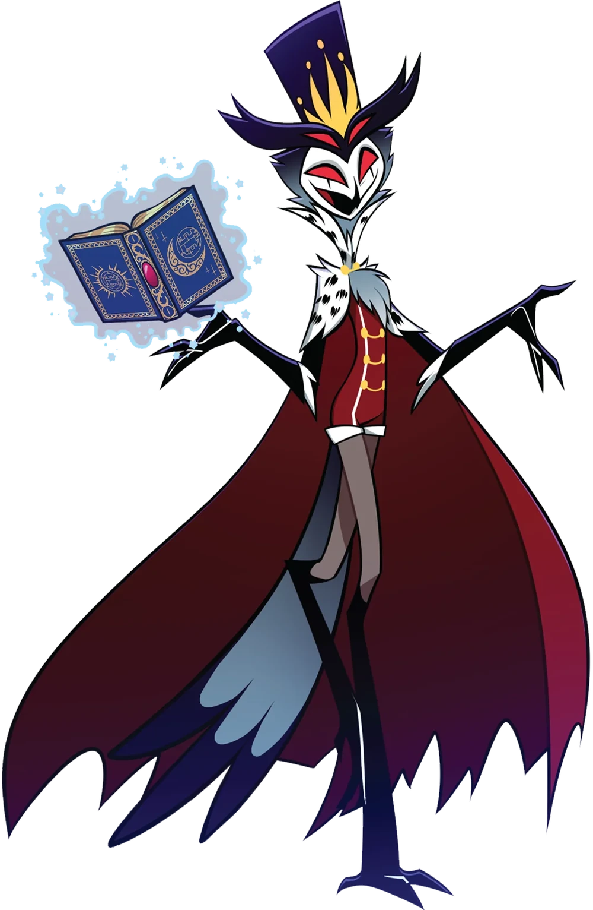
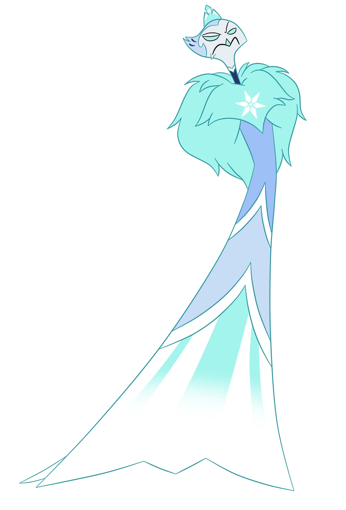

Príncipe da Família Ars Goetia
Esta página apresenta resumidamente cada príncipes da família Ars Goetia revelado até agora.
Stolas Goetia
Stolas é o primeiro membro da família Goetia apresentado no show. Como um príncipe Goetia, seu trabalho é estudar os astros e as profecias humanas. Stolas dá a impressão de alguém majestoso, mas por trás dessa aparência, é extravagante, dramático e excêntrico, agindo frequentemente por impulso emocional e sem levar sua reputação real muito a sério.
Andrealphus Goetia
Andrealphus, era um marquês Goetia, atualmente e um príncipe Goetia, e irmão mais velho de Stella, é extravagante, esnobe e arrogante. Ele é classista e despreza demônios de posição inferior. Seu talento dramático esconde uma disposição calculista e oportunista, sempre buscando manipular situações a seu favor de maneira insensível e implacável.